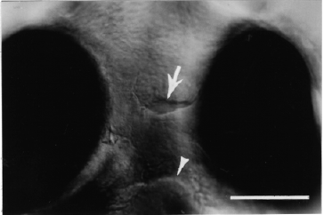

Modified from: Kimmel et al., 1955. Developmental Dynamics 203:253-310. Copyright © 1995 Wiley-Liss, Inc. Reprinted only by permission of Wiley-Liss, a subsidiary of John Wiley & Sons, Inc.
Fig. 40. The embryo's small open mouth (arrow) lies between the two eyes at the pec-fin stage (60 h). Ventral Nomarski view with anterior to the top. The midline bulge at the bottom of the field (arrowhead) is the developing ventral part of the hyoid arch (pharyngeal arch 2). The mandibular arch (pharyngeal arch 1), forming the lower jaw, is faintly outlined between the hyoid arch and the mouth. Scale bar: 50 µm.

Figure 40